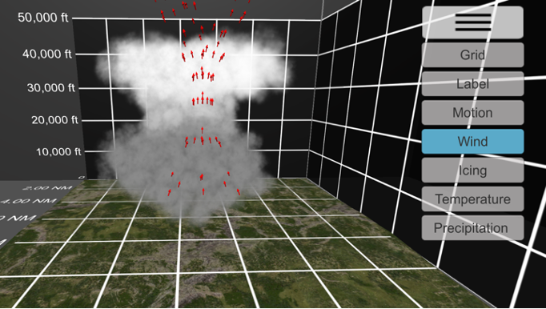
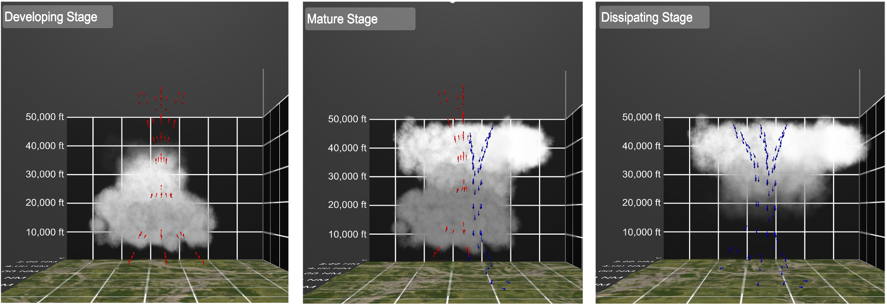

Designing Three-Dimensional Augmented Reality Weather Visualizations for General Aviation Training
The work is summarized below. A full report is published in IEEE Transactions on Professional Communication.
Introduction
Weather-related accidents are a continuing safety threat and a monetary cost to general aviation (GA) in the United States. These accidents occurred between 36 and 65 times annually from 2006 through 2015 and had high estimated costs between $1.64 billion and $4.64 billion. Inexperience student GA pilots are at higher risk of accidents because they lack weather expertise. In general, they are less skilled compared to experienced pilots in finding weather information, recognizing weather cues, assessing weather situations, judging visibility, and perceiving weather-related risks. One contributor to the problem may be that current GA weather training curricula have gaps in how students learn to correlate weather knowledge with weather-related situations and make effective weather-related decisions, particularly decisions about flying visual flight rules into instrumental meteorological conditions (VFR-into-IMC).
Approach
Our approach to enhancing training useed augmented reality (AR) technologies to provide improved representations of weather. 3D AR learning objects have been used in the sciences to make natural phenomena more accessible in the classroom. These AR learning objects help students improve their motivation to learn, develop more robust conceptual knowledge earlier in their training, and better remember spatial information. AR weather visualizations may have a similar beneficial impacts on students in GA weather training.
This study investigated the research question of whether smartphone- and tablet-based 3D AR weather visualizations can be effective tools in GA weather training. To investigate the question, we designed, developed, and implemented a 3D visualization of a thunderstorm cell lifecycle and tested it with one certified flight instructor (CFI), two university professors, and three students. The pilot study provided preliminary validation for the use of the thunderstorm visualization in GA training, identified visualization improvements that will help instructors communicate with students in training, and indicated the application can be integrated into the traditional print training curricula to enhance learning.
Design
This project focused on the thunderstorm cell lifecycle. The thunderstorm cell lifecycle is part of the training for the Airman Certification Standard (ACS) private pilot practical examination and part of the weather hazards module required in Federal Aviation Administration (FAA) ground training for the private, instrument, and commercial pilot certifications.
The design of the the thunderstorm cell lifecycle visualization was informed by the Federal Aviation Administration Advisory Circulars (AC) No. 00-6B: Aviation Weather and AC No. 00-24C: Thunderstorms. The visualization depicts a grid, labels, motion, wind, icing, temperature, and precipitation (see Figure 1). The user interface provides buttons to animate the cycle and toggle features on and off.

A thunderstorm cell is the convective cell of a cumulonimbus cloud having lightning and thunder and it has three distinct stages. Students develop knowledge of the stages to better understand the weather phenomena and expect the hazards present in each stage. The stages are shown with cloud movement and wind arrows (See Figure 2). The developing stage is characterized by a strong convective updraft with speed up to 3,000 feet per minute and vertical cloud growth. The mature stage is characterized by both up- and down-drafts and the development of an anvil cloud blown horizontally by winds aloft. The dissipating stage is characterized by a strong downdraft with speeds up to 6,000 feet per minute and cloud dissipation from the ground up.

Evaluation
A preliminary evlauation was conducted to assess whether the weather visualization could be an effective tool for GA weather training. The Institutional Review Board approved the study. The six participants included one CFI, two university professors, and three students. The CFI’s and professors’ reviews were conducted to assess the accuracy and effectiveness of the visualization for training. The AR usability study was conducted with students to assess the usability of the visualization with instructors and students.
Procedure
The participants began the evaluations with a briefing and informed consent. The students first took a knowledge pre-test about the thunderstorm cell lifecycle. The CFI and professors were asked to describe their expectations for an instructional thunderstorm visualization. Then all participants were trained on how to use the WeatherXplore application and the 3D visualization. All participants completed a series of five tasks with the visualization. However, the three students completed an additional sixth task. Participants were prompted with a question (see Table 1) and then asked to navigate the screens to find the appropriate answer. Following each task, they completed the NASA TLX workload scale and a questionnaire about their perception of the AR content. After completing all study tasks, they completed the system usability scale (SUS) to provide subjective data about the perceived usability of the tool, explored and reviewed the visualization in an unmoderated session, and provided open-ended comments to provide their qualitative assessments of the tool. Finally, students completed a knowledge post-test about the thunderstorm cell lifecycle. Table 1 summarizes the procedure.
| Task type | Who? | Task |
|---|---|---|
| Expectations | CFI/Professors | Describes expectations |
| Pre-test | Students | 6 questions about thunderstorms |
| Task 1 | Both | In which stage of the life cycle do both up- and down-drafts occur? |
| Task 2 | Both | What is the speed of a typical updraft in the developing stage? |
| Task 3 | Both | In which stage of the lifecycle does rain fall to the surface of the earth? |
| Task 4 | Both | How fast and far does the cell move across the ground? |
| Task 5 | Both | At what altitude is the potential for icing in this model severe? |
| Task 6 | Students | At what temperatures is the potential for icing severe? |
| Review | CFI/Professors | Review the model |
| Post-test | Students | 6 questions about thunderstorms |
| Comments | Both | Open-ended written comments |
Data collection
Table 2 summarizes the data collection. The quantitative data were summarized with descriptive statistics. The only exception is the System Usability Scale which was calculated using an established scoring procedure that resulted in a score out of 100 points. The results for the knowledge pre-tests and post-tests were averaged. The written statements were cataloged in a spreadsheet and organized by prompt and participant. For each prompt, the participants’ response statements were analyzed using a pragmatic iterative approach. Primary coding of the statements identified salient topics. Themes were developed when appropriate by combining relevant topics.
| Type | Data Collection | Type/Units | Method | Time |
|---|---|---|---|---|
| Expert expectations | Thunderstorm content | Written statements | Written | Pre-trial |
| Expert expectations | Visualization | Written statements | Written | Pre-trial |
| Expert expectations | Learning with the visualization | Written statements | Written | Pre-trial |
| Expert expectations | Interaction with the visualization | Written statements | Written | Pre-trial |
| Expert review | Visualization | Scale 1-5 (Disagree/Agree) | Survey | Post-trail |
| Expert review | Visualization information | Scale 1-5 (Disagree/Agree) | Survey | Post-trail |
| Expert review | Visualization representation | Scale 1-5 (Disagree/Agree) | Survey | Post-trail |
| Training | Expected effectiveness | Scale 1-5 (Disagree/Agree) | Survey | Post-trail |
| Training | Expected effectiveness | Scale 1-5 (Disagree/Agree) | Survey | Post-trail |
| Knowledge | Student knowledge | Number | Survey | Pre/Post |
| Devices | Device appropriateness | Scale 1-5 (Disagree/Agree) | Survey | Post-trial |
| Devices | Qualitative statements | Written statements | Written | Post-trial |
| Task completion | Time on task | Seconds | Timer | Post-task |
| Task completion | Task completion correctness | Percentage | Survey | Post-task |
| Task completion | Task completion confidence | Scale 1-5 (Disagree/Agree) | Survey | Post-task |
| Task completion | Qualitative statements | Written statements | Written | Post-task |
| User interface | Workload (TLX) | Scale 0-20 | Survey | Post-task |
| User interface | System Usability Scale | Scale 1-5 (Disagree/Agree) | Survey | Post-trial |
Results
Expert Review
After using the visualization, the experts agreed that the visualization matched their expectations for an educational thunderstorm visualization (scores = 5, 4, 4 on a scale of 1–5). The university thunderstorm expert described the visualization as “a very good 3D version of the classic schematic shown in introductory meteorology textbooks.” In addition to the current visualization, the CFI said that she “would like to see how this affects aircraft.”
The experts agreed that the application would be effective to enhance GA weather education (scores = 5, 4, 4 on a scale of 1–5). The university aviation meteorology instructor stated that, "This is a great tool for any instructor as it provides a very good 3D representation of the development of the thunderstorm and how different factors in the storm generate the different hazards that are discussed when learning about thunderstorms." The university thunderstorm expert stated that the visualization helps “cover the most basic understanding of thunderstorms.” However, the experts suggested that additional content would make the visualization more effective, including hazards to a flight, the effect of thunderstorms on a flight, thunderstorm avoidance, and multicell storms.
The CFI and the university aviation meteorology instructor felt that the representation was accurate, but the university thunderstorm expert did not (scores = 4, 4, 2 on a scale of 1–5). The university aviation meteorology instructor stated that it “gives a good 3D view of the developing storm.” The university thunderstorm expert said that “this would be a good first step for aviation weather training” but noted that “this type of thunderstorm only represents one small piece of what happens in nature.” He suggested including “organized thunderstorm systems such as squall lines, where pilots often have to navigate through narrow holes” and a variety of wind speeds in the updrafts and downdrafts, in addition to the peak value.
Student Knowledge
The average student pretest score was M= 3.3 (SD = 2.3) of 6 and the average post-test score was M= 4.6 (SD = 0.57) of 6.
Task completion
Participants completed the first three tasks with relatively high levels of correctness. They completed tasks 4, 5, and 6 with a lower level of correctness. The experts reported issues completing task 4 (cell movement) because the grid was large, and the grid labels were difficult to see. The experts reported issues completing task 5 (icing altitudes) because the distance between the thunderstorm cell and the grid created issues for estimating the height. The three students reported issues completing task 6 (icing temperatures) because the colors of the icing symbol (icing) against the colors of the cloud (temperature) made reading difficult.
Devices
The experts strongly agreed that the devices are appropriate for GA weather education (scores = 5, 5, 5 on a scale of 1–5). The university aviation meteorology instructor stated that “everyone has, or has access to, either a smartphone and or tablet.”
User Interface
The NASA TLX workload subscale scores had Mdn = 4.0 of 20(IQR = 7.0), where lower scores indicate lower workload. The SUS scores had Mdn = 75 of 100 (IQR = 9.4), where higher scores indicate better usability. Scores above 68 are considered positive using generally accepted industry standards. Overall, the CFI, professors, and students described the user interface as conveniently placed and easy to use. The experts liked that the thunderstorm content immediately changed after manipulating the controls. The CFI and university aviation meteorology instructor suggested that users should be able to select icing and temperature simultaneously because they are linked to one another. Students described the navigation as easy to use.
Discussion
The results of this preliminary evaluation indicate that smartphone-based 3D AR thunderstorm visualization has the potential to be an effective tool for weather education. The experts rated the content as effective, and they commented on the value of animating thunderstorm development. The students completed the learning tasks with reasonable workload levels and increased their knowledge by interacting with the visualization. The communication of thunderstorm theory apears to have been supported by the animation and interactivity. Animation provided information about the dynamics of thunderstorm development. Interacted provided the ability to layer information about various hazards such as wind patterns, wind speeds, precipitation timing, movement distances, icing, and temperatures. Future work can conduct hypothesis testing in order test the impact of learning with this visualization on students' knowledge.